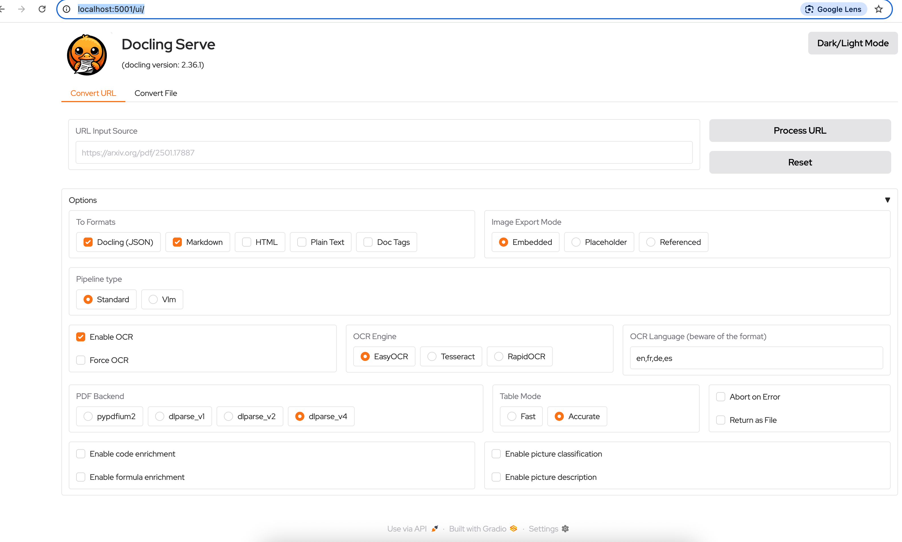
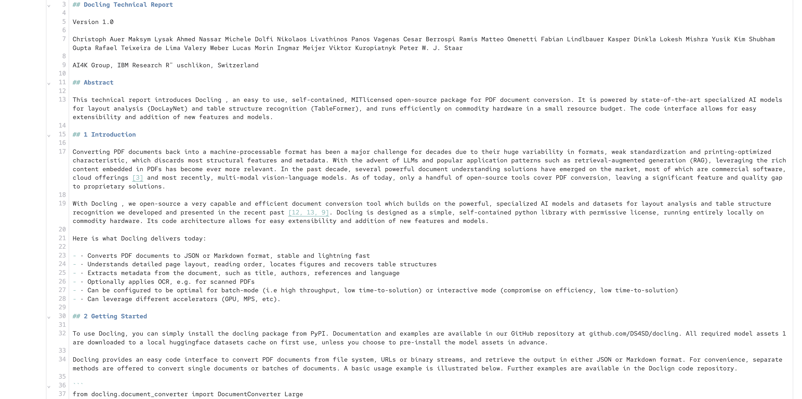
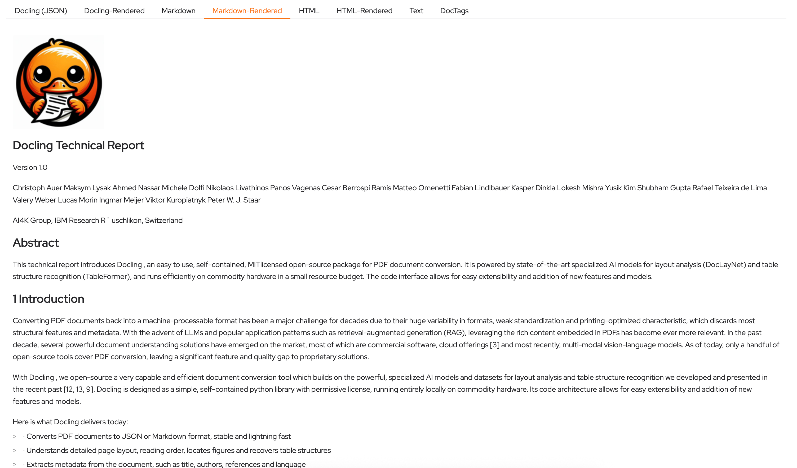
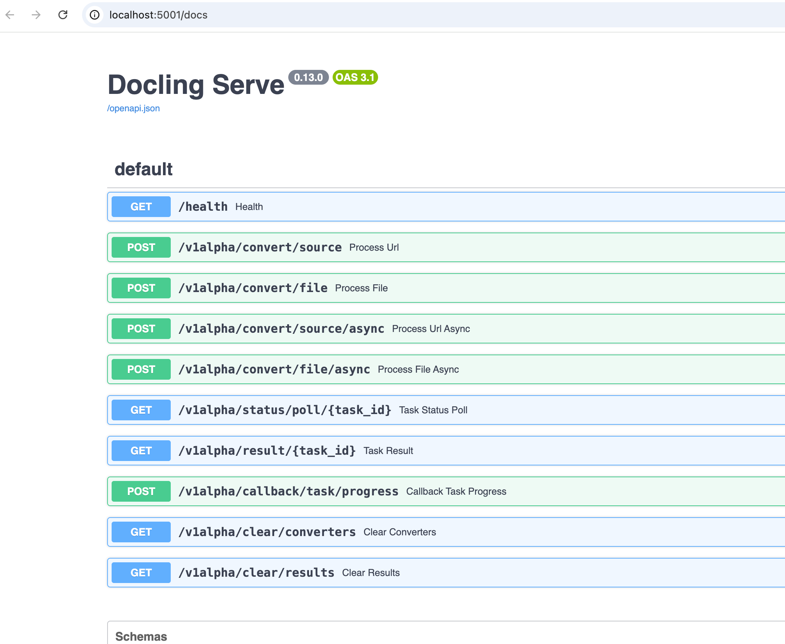

Docling Web UI
The docling-serve project provides an easy-to-use web-based UI to experiment and prototype document conversion using Docling.
The most convenient way to run it is as a container.
| Do not expose the web UI to the internet or external use unless you know what you are doing. Ideally, you must provision a reverse proxy, load balancer, or an API gateway in front of docling-serve for security reasons. It is mainly meant to be used to test, experiment, and prototype document parsing and conversion. |
Lab: Using the docling-serve Web UI
-
Run the
docling-servecontainer using Podman$ podman run -p 5001:5001 \ -e DOCLING_SERVE_ENABLE_UI=true \ quay.io/docling-project/docling-serve Trying to pull quay.io/docling-project/docling-serve:latest... Getting image source signatures ... Starting production server 🚀 Server started at http://0.0.0.0:5001 Documentation at http://0.0.0.0:5001/docs UI at http://0.0.0.0:5001/ui Logs: INFO: Started server process [1] INFO: Waiting for application startup. INFO: Application startup complete. INFO: Uvicorn running on http://0.0.0.0:5001 (Press CTRL+C to quit) -
Using a web browser, navigate to http://localhost:5001/ui/ to load the Docling server web UI
Figure 1. Docling serve web UI -
The web UI provides two tabs for a URL containing an input document (
Convert URL) and another for local files that can be uploaded from the system (Convert File). Enterhttps://arxiv.org/pdf/2408.09869in theURL Input Sourcefield. In theOptionssection, select theMarkdownoption and unselectJSON. Leave all other fields at the default values. -
Click
Process URLto convert the document. Click theMarkdowntab in the output section.Figure 2. Markdown output in web UI -
You can click the
Markdown-Renderedtab in the output section to preview how the Markdown is rendered.Figure 3. Markdown output preview in web UI -
Click the
Convert Filetab at the top of the web UI and upload a sample input document from thesample-datafolder in thegenai-appsGit repository, or some other file in one of the supported formats from your local file system. ClickProcess URLto convert the document, and verify the output. -
Experiment with different combinations of input and output formats and check the output.
-
docling-servealso provides a REST API that you can use to integrate with third-party client applications. Navigate to http://localhost:5001/docs to view the OpenAPI (Swagger) API documentation fordocling-serve.Figure 4. Docling serve REST API -
Send an HTTP request using the
curltool to test the REST API by converting a document (hosted at an external URL). You should see a JSON response as output of the conversion. The Markdown content is under themd_contentattribute of the JSON response.$ curl -X 'POST' \ 'http://localhost:5001/v1alpha/convert/source' \ -H 'accept: application/json' \ -H 'Content-Type: application/json' \ -d '{ "http_sources": [{"url": "https://arxiv.org/pdf/2501.17887"}] }' {"document":{"filename":"2501.17887v1.pdf","md_content":"## Docling: An Efficient Open-Source Toolkit for AI-driven Document Conversion ... "json_content":null,"html_content":null,"text_content":null,"doctags_content":null}, "status":"success","errors":[],"processing_time":16.26403219400163,"timings":{}} -
After you have finished experimenting with the
docling-serveweb UI, pressCtrl+Cin the terminal window where you started the container using Podman to stop the server.